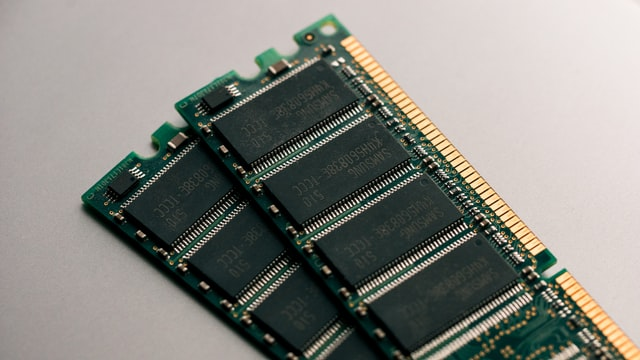

Main memory definition
While it can be in the form of hard disk or solid state drives, these are storage devices and are not
what we refer to when we usually talk about memory. Memory is in the form of
RAM (random access memory) and ROM (Read-only memory), memory and main memory is where Computers
read and write data, it can manipulate data in the form of memory (not including ROM, which is read-only).
Memory determines the amount of application or programs you can have open at once.
